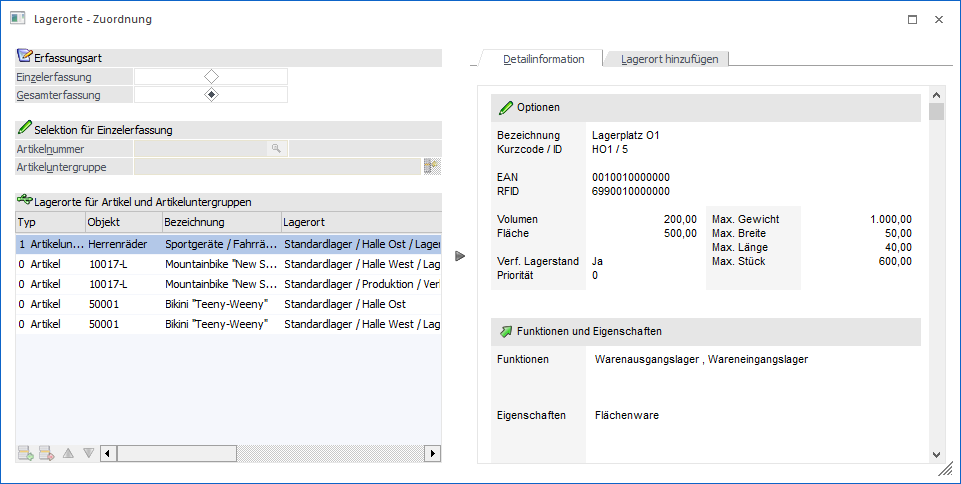
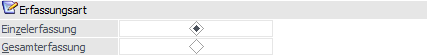
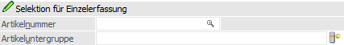
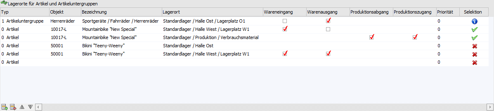
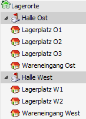
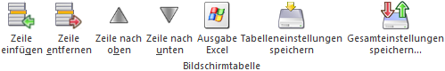
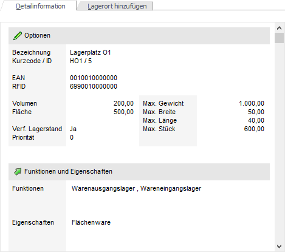
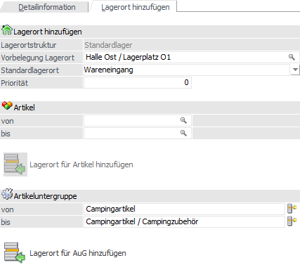

Im Menüpunkt…
1 WinLine FAKT
1 Stammdaten
1 Lagerorte
1 Lagerorte - Zuordnung
… werden Artikeln bzw. Artikeluntergruppen bestimmte Lagerorte zugeordnet.
Achtung
Über den Artikelstamm (Register "Stamm" - Unterregister "Allgemein" - Option "Selektion über Lageort-Zuordnung") kann pro Artikel definiert werden, ob die in diesem Fenster hinterlegten Lagerorte als Selektion oder als Sortierkriterium in der Lagerorterfassung dienen sollen.
Hinweis
Standardmäßig wird das Fenster in einem "Lesemodus" geöffnet, d.h. es können die bestehenden Einstellungen kontrolliert, Änderungen allerdings nicht durchgeführt werden. Hierfür muss zunächst mit Hilfe des Buttons "Bearbeiten" der "Bearbeitungsmodus" aktiviert werden.
Hinweis - Zuordnung von Lagerorten
Die Zuordnung von Lagerorten zu einem Artikel kann über 3 Ebenen erfolgen:
ü Grobe Zuweisung
Die grobe
Zuweisung erfolgt im Artikelstamm, in dem die Lagerstruktur einem Artikel
hinterlegt wird. Dies ist Grundvoraussetzung für das Arbeiten mit
Lagerorten.
ü Mittlere Zuweisung
Die mittlere
Zuweisung von Lagerorten erfolgt mit Hilfe des Programms "Lagerorte -
Zuordnung". In diesem erfolgt die Definition welche Orte für welche Artikel bzw.
Artikeluntergruppen zur Verfügung stehen und was die Standardlagerorte sind.
ü Feine Zuweisung
Die feine
Zuweisung ist möglich, in dem mit Eigenschaften der Art "9 - Checkbox" für
Lagerorte / Artikel gearbeitet wird. Diese Eigenschaften können im Lagerort und
im Artikelstamm entsprechend aktiviert werden.

Die Zuordnung von Lagerorten untergliedert sich in 2 Bereiche
ü Selektion, Anzeige und
Erfassung
Im linken Bereich des Fensters steht die Selektion ("Erfassungsart"
und "Selektion für Einzelerfassung") und die Anzeige bzw. Erfassung (Tabelle
"Lagerorte für Artikel und Artikeluntergruppen") zur Verfügung.
ü Detailinfo und
Massenzuweisung
Im rechten Bereich des Fensters werden Detailinformation der
aktuellen Erfassungszeile angezeigt (Register "Detailinformation") oder es kann
eine Massenzuweisung von Lagerorten stattfinden (Register "Lagerort
hinzufügen").
Erfassungsart

Ø Einzelerfassung / Gesamterfassung
An dieser Stelle wird definiert, ob die Anzeige samt Erfassung für ein Objekt (Artikel inklusive Artikeluntergruppe) stattfinden soll oder ob unterschiedliche Objekte gleichzeitig erfasst bzw. angezeigt werden sollen. Je nach Einstellung wird die untere Tabelle mit Daten gefüllt.
Hinweis
Bei Anwahl der Erfassungsart "Gesamterfassung" wird zunächst die Tabelle "Lagerorte für Artikel und Artikeluntergruppen" mit allen vorhandenen Zuordnungen gefüllt.
Selektion für Einzelerfassung

Wurde die Erfassungsart "Einzelerfassung" ausgewählt, so kann in diesem Bereich angegeben werden für welches Objekt die Anzeige und Erfassung erfolgen soll.
Ø Artikelnummer
An dieser Stelle kann die Artikelnummer für die Anzeige und Erfassung hinterlegt werden.
Ø Artikeluntergruppe
Abhängig vom gewählten Artikel wird automatisch die Artikeluntergruppe vorgeschlagen.
Lagerorte für Artikel und Artikeluntergruppen

Ø Typ
An dieser Stelle wird der Typ für das folgende Objekt ausgewählt. Folgende Varianten stehen zur Verfügung:
ü 0 - Artikel
ü 1 - Artikeluntergruppe
Ø Objekt
Je nach Typ kann hier ein Artikel oder eine Artikeluntergruppe hinterlegt werden. Hierbei kann jeder Artikel bzw. jede Artikeluntergruppe mehrfach aufgeführt werden, allerdings ist pro Objekt nur einmal die Hinterlegung des identischen Lagerorts möglich. Sollte für einen Artikel und eine Artikeluntergruppe der gleiche Ort vorgesehen sein (mit ggfs. unterschiedlichen Einstellungen), so wird der Eintrag des Artikels berücksichtigt.
Hinweis
Bei der Erfassungsart "Einzelerfassung" steht diese Spalte nicht zur Verfügung, da diese Daten bereits über die Eingabefelder "Artikelnummer" und "Artikeluntergruppe" (siehe Bereich "Selektion für Einzelerfassung") vorgegeben sind.
Achtung
Handelt es sich um einen Hauptartikel mit Ausprägungen, so wird die Zuordnung automatisch auf die Ausprägungen weitervererbt. D.h. Ausprägung1 nutzt die Einstellungen des Haupartikels, Ausprägung2 wiederum Ausprägung1 (wenn vorhanden) inklusive Hauptartikel und eine Charge / Identnummer die Ausprägung1 und Ausprägung2 (wenn jeweils vorhanden) inklusive Hauptartikel.
Dieses System wird auch bei der Prüfung auf doppelte Einträge berücksichtigt, so dass identische Lagerorte für z.B. Hauptartikel und Ausprägung nicht möglich sind.
Ø Bezeichnung
In dieser Spalte wird die Bezeichnung des Objekts dargestellt.
Ø Lagerort
An dieser Stelle wird der zugeordnete Lagerort hinterlegt.
Hinweis
Handelt es sich um einen Ort mit weiteren Hierarchie-Ebenen, so werden diese automatisch freigeschaltet. Da es sich hierbei um eine reine Freigabe von Lagerorten handelt, macht die Hinterlegung nur bei Artikel mit aktivierte Option " Selektion über Lageort-Zuordnung" Sinn.
Beispiel
Die Lagerorte in der Struktur "001 - Standard" sind u.a. wie folgt aufgebaut:

Die Lagerortstruktur "001 - Standard" wurde anschließend in dem Artikel "10017 - Mountainbike Special" hinterlegt, wobei diesem nur jene Lagerorte zur Verfügung stehen sollen, welche in der Lagerort-Zuordnung erfasst wurden (Option " Selektion über Lageort-Zuordnung" im Artikelstamm ist aktiviert).
Erfolgt nun im Programm "Lagerorte - Zuordnung" die Zuordnung des Ortes "Halle Ost", dann sind die Orte "Lagerplatz O1" bis "Lagerplatz O3" und "Wareneingang Ost" ebenfalls freigegeben.
Ø Wareneingang / Warenausgang / Kommissionslager (optional) / Konsignationslager (optional) / Produktionsabgang / Produktionszugang / Reparaturlager (optional) / Fremdfertigungslager (optional)
In diesen Spalten wird definiert, ob es sich um einen Standardlagerort für das Objekt handelt. Solche Orte werden in dem Programm "Lagerorte erfassen", abhängig von der genutzten Lagerortfunktion, am Anfang der Tabelle dargestellt und entsprechend gekennzeichnet.
Des Weiteren kann mit Hilfe eines Standardlagerorts eine automatische Lagerortaufteilung in der Belegerfassung erfolgen, wobei eine detaillierte Beschreibung der Voraussetzungen bzw. Arbeitsabläufe dem Kapitel "Belegerfassung - Register "Mitte" - Automatische Lagerortaufteilung" entnommen werden kann.
Hinweis
Die Definition als Standardlagerort ist nur unter folgenden Voraussetzungen möglich:
ü Die jeweilige Lagerortfunktion ist für den Lagerort im Lagerortestamm aktiviert worden.
ü Es handelt sich bei dem Lagerort um keinen mit weiteren Hierarchie-Ebenen.
Achtung
Eine Unterscheidung der Standardlagerorte "Produktionsabgang" und "Produktionszugang" findet noch nicht statt.
Ø Priorität
Handelt es sich bei dem aktuellen Eintrag um einen Standardlagerort, so kann an dieser Stelle eine Priorität (numerisch, 5-stellig) vergeben werden, wobei diese mindestens 1 lauten muss. Durch diese Angabe kann die Sortierung der Lagerorte im Programm "Lagerorte erfassen" beeinflusst werden.
Hinweis
Die Sortierung der Lagerorte im Programm "Lagerorte erfassen" erfolgt nach dem folgenden Schema:
ü 1. Lagerorte mit Kennzeichnung "Standardlagerort" -> Priorität (aus "Lagerorte - Zuordnung") absteigend
ü 2. Lagerorte mit Kennzeichnung "Standardlagerort" -> Anordnung aus der Tabelle "Lagerorte für Artikel und Artikeluntergruppen" absteigend
ü 3. Lagerorte ohne Kennzeichnung "Standardlagerort" -> Priorität (aus "Lagerortestamm") absteigend
ü 4. Lagerorte ohne Kennzeichnung "Standardlagerort" -> Anlagezeitpunkt (aus "Lagerortestamm" - pro Hierarchie-Ebene ausgewertet) aufsteigend
Ø Selektion
In der Spalte "Selektion" wird über ein Icon symbolisiert, ob die Zuordnung als Selektion oder als Sortierung genutzt wird.
ü - Selektion
Es handelt sich bei der
aktuellen Ziele um einen Artikel, welcher die Zuordnung als Selektion nutzt
(Option " Selektion über Lageort-Zuordnung" im Artikelstamm ist aktiviert)
ü  - Sortierung
- Sortierung
Es handelt sich bei der
aktuellen Zeile um einen Artikel, welcher die Zuordnung als Sortierung nutzt
(Option " Selektion über Lageort-Zuordnung" im Artikelstamm ist
deaktiviert).
ü - Artikeluntergruppe
Es handelt sich bei
der aktuellen Zeile um eine Artikeluntergruppe. Da die Nutzung der Zuordnung
immer vom Artikel abhängig ist, kann per Doppelklick eine entsprechende
Übersicht am Bildschirm ausgegeben werden. In dieser werden die Artikel, welcher
der Artikeluntergruppe zugeordnet sind, aufgeführt, samt deren
Lagerortdefinition.
Ø Zeilennummer (optional)
An dieser Stelle wird über Reihenfolge der Objekte mit Lagerorten innerhalb der Tabelle Auskunft gegeben.
Tabellenbuttons

Ø Zeile einfügen
Durch Anwahl des Buttons "Zeile einfügen" kann eine neue Zeile eingefügt werden.
Ø Zeile entfernen
Mit Hilfe dieses Buttons wird die markierte Zeile gelöscht.
Ø Zeile nach oben
Durch Anwahl dieses Buttons wird die markierte Zeile nach oben geschoben.
Ø Zeile nach unten
Durch Anwahl dieses Buttons wird die markierte Zeile nach unten geschoben.
Ø Ausgabe Excel
Durch Anwahl des Buttons "Ausgabe Excel" wird der Inhalt der Tabelle an Microsoft Excel übergeben.
Ø Tabelleneinstellungen speichern
Die Spalten einer Tabelle können grundsätzlich an beliebige Positionen verschoben, bzw. in der Breite entsprechend angepasst werden. Durch Anwahl des Buttons "Tabelleneinstellungen speichern" werden die Einstellungen benutzerspezifisch gespeichert und bei dem nächsten Aufruf des Programmpunktes wieder vorgeschlagen.
Ø Gesamteinstellungen speichern…
Im Gegensatz zu "Tabelleneinstellungen speichern" können mit "Gesamteinstellungen speichern" mehrere Tabellenaufbauten gespeichert und nach Wunsch geladen werden. Zusätzlich werden Sonderfunktionen der Tabelle (z.B. "Spalte gruppieren") ebenfalls bei der Speicherung bedacht.
Register "Detailinformation"

In dem Register "Detailinformationen" werden Informationen zum Lagerort und dem Artikel, bezogen auf die aktuelle Zeile, ausgegeben.
Register "Lagerorte hinzufügen"

Mit Hilfe des Bereichs "Lagerort hinzufügen" können Massenzuordnungen erfolgen.
Ø Lagerortstruktur
An dieser Stelle wird die Struktur des gewählten Lagerortes (siehe Feld "Vorbelegung Lagerort") angezeigt.
Ø Vorbelegung Lagerort
Hier wird der Lagerort angegeben, auf den die nachfolgenden Artikel und / oder Artikeluntergruppen zugeordnet werden sollen.
Ø Standardlagerort
An dieser Stelle kann definiert werden, ob der zuvor ausgewählte Lagerort als Standardlagerort in die Tabelle übernommen werden soll. Die zur Verfügung stehenden Varianten sind von den Lagerortfunktionen des Orts (Feld "Vorbelegung Lagerort") abhängig.
Ø Priorität
Wird der Lagerort als sogenannter Standardlagerort vorgesehen, dann kann hier die entsprechende Priorität hinterlegt werden.
Ø Artikel von / bis
An dieser Stelle wird der Artikelbereich angegeben, welcher dem Lagerort zugeordnet werden soll.
Ø Lagerort für Artikel hinzufügen
Durch Anwahl dieses Buttons werden die Zeilen in der Tabelle eingefügt und können angepasst werden.
Hinweis
Während des Einfügens werden die Lagerortstruktur, die Lagerorteigenschaften und auf bereits vorhandene Einträge geprüft. D.h. es werden nur jene Artikel in die Tabelle eingefügt, welche der ausgewählten Lagerortstruktur entsprechen, nicht aufgrund von Eigenschaften ausgeschlossen sind und bei denen es nicht bereits gleichlautende Zeilen gibt.
Ø Artikeluntergruppe von / bis
An dieser Stelle wird der Artikeluntergruppenbereich angegeben, welcher dem Lagerort zugeordnet werden soll.
Ø Lagerort für AuG hinzufügen
Durch Anwahl dieses Buttons werden die Zeilen in der Tabelle eingefügt und können angepasst werden.
Hinweis
Während des Einfügens erfolgt eine Prüfung auf bereits vorhandene Einträge. D.h. es werden nur jene Artikeluntergruppen in die Tabelle eingefügt, bei denen es nicht bereits gleichlautende Zeilen gibt.
Buttons
Ø Ok
Durch Anwahl des Buttons "Ok" bzw. der Taste F5 werden die Zuordnungen gespeichert.
Ø Ende
Durch Anklicken des Buttons "Ende" bzw. der Taste ESC wird das Fenster geschlossen und alle nicht gespeicherten Eingaben verworfen.
Ø Zuordnungsinformation
Durch Anwahl des Buttons, welcher nur in der Einzelerfassung zur Verfügung steht, wird am Bildschirm eine Übersicht der Zuordnungen des Artikels ausgegeben.
Hinweis
Handelt es sich um einen Hauptartikel mit Ausprägungen oder eine Ausprägung, so werden alle beteiligten Ebenen ebenfalls aufgeführt.
Ø Bearbeiten
Bei Anwahl dieses Buttons wird der "Bearbeitungsmodus" aktiviert, d.h. bestehende Zuordnungen können geändert und neue angelegt werden.
Hinweis
Standardmäßig wird die Lageort-Zuordnung in einem "Lesemodus" geöffnet, d.h. es können bestehende Zuordnungen aufgerufen und kontrolliert werden, ein Ändern bzw. eine Neuanlage ist nicht möglich.